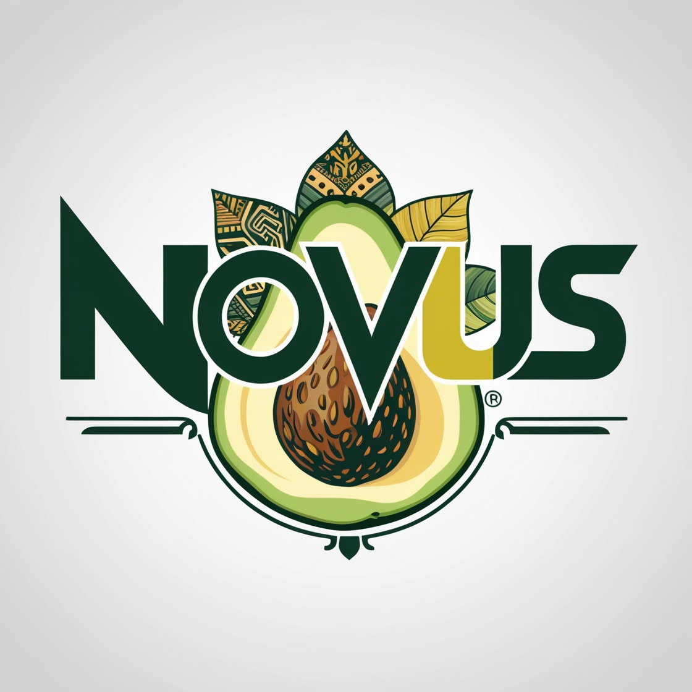
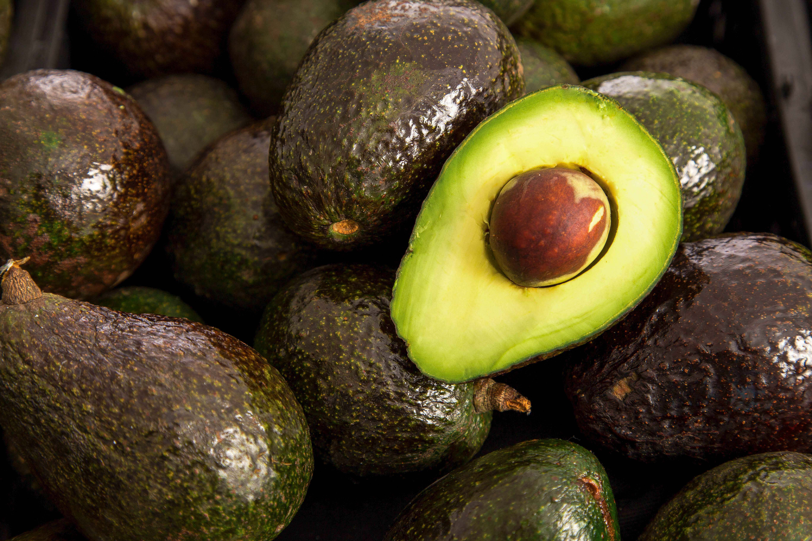

EQUIPO: 5. NOVUS
SEDE: FACULTAD DE INGENIERÍA CIVIL, UANL
DESAFÍO SELECCIONADO: 04 - AGUACATE
SEDE: FACULTAD DE INGENIERÍA CIVIL, UANL
DESAFÍO SELECCIONADO: 04 - AGUACATE



El poder sostenible del aguacate
Descubre nuestra botella biodegradable hecha de almidón de aguacate, diseñada para cerrar el ciclo de vida de manera sostenible.
Conoce nuestra botella